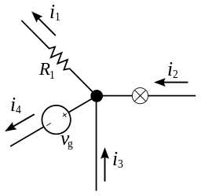
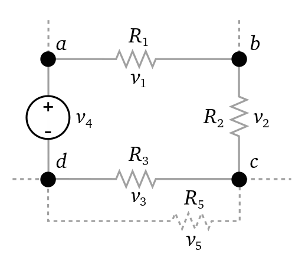
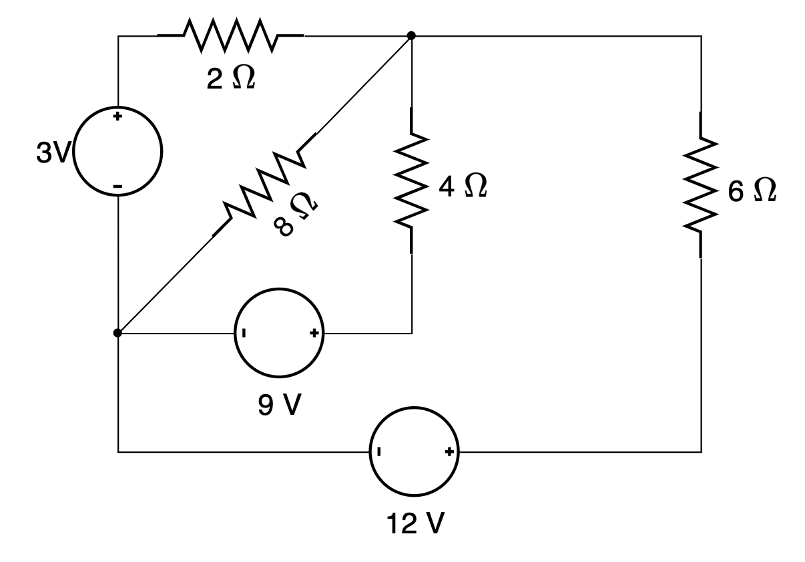
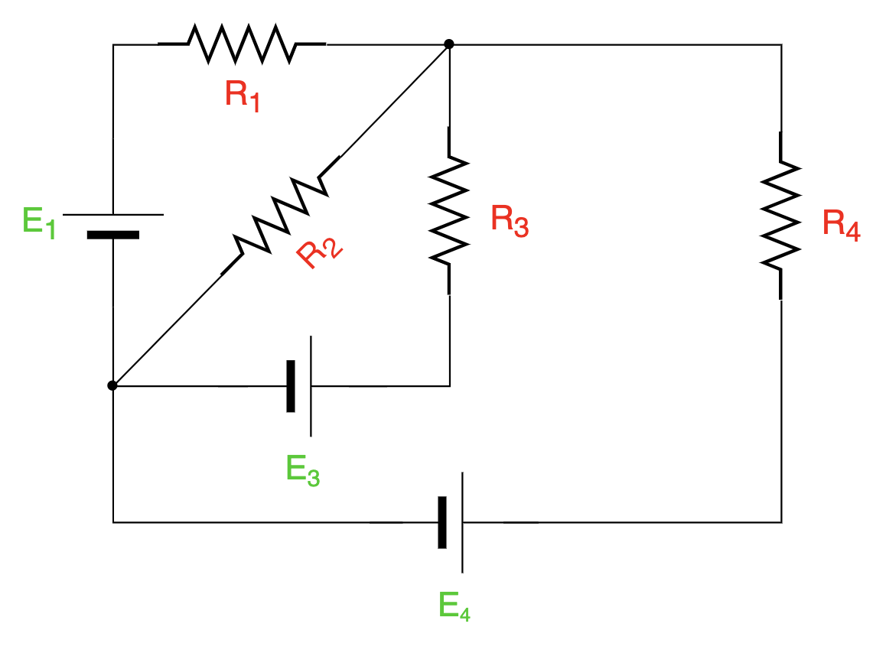
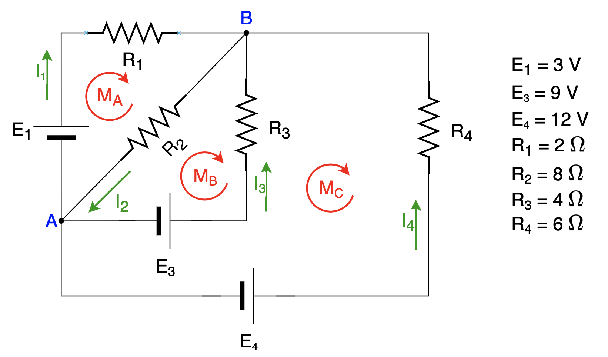

Sesión 7. Leyes de Kirchhoff
Sesiones 7–8
Sesión 7 · Nudos y mallas
El objetivo es traducir la conservación de la carga y de la energía a ecuaciones, usando un convenio de signos coherente.
Gustav Robert Kirchhoff enunció, en 1846, dos leyes que permiten la resolución sistemática de problemas de circuitos eléctricos que presentarían muchas dificultades de solución mediante la ley de Ohm. Dichas leyes están basadas en la conservación de la carga eléctrica (primera ley) y en la conservación de la energía (segunda ley).
Para entender bien las leyes de Kirchhoff, primero tenemos que definir algunos conceptos de los circuitos:
- Nudo: es cualquier punto de conexión de un circuito en el que se conecten 3 o más conductores. También se le puede llamar nodo.
- Rama: parte del circuito comprendida entre dos nudos consecutivos.
- Malla: camino en un circuito que permite, partiendo de un nudo cualquiera, volver a él sin pasar dos veces por la misma rama.
Sabiendo esto, las leyes de Kirchhoff son las siguientes:
Primera ley de Kirchhoff
Esta ley también se conoce como ley de las corrientes o ley de los nudos (o nodos). Dice así:
Otro enunciado más genérico es: "la suma algebraica de todas las intensidades de las corrientes que pasan por un nudo es igual a cero." O, matemáticamente:
| \[\sum_{k=1}^{n}i_{k}=0\] |
Para verlo más fácil, mira este ejemplo:

En ese circuito de la figura, aplicando la primera ley de Kirchhoff, tendríamos que: \(i_{2}+i_{3}=i_{1}+i_{4}\). Es decir, suma de intensidades que entran en el nudo = suma de las intensidades que salen del nudo.Segunda ley de Kirchhoff
Esta ley también se conoce como ley de las tensiones o ley de las mallas. Dice así:
Otro enunciado más genérico es: "la suma algebraica de las diferencias de potencial que hay en una malla es igual a cero." Matemáticamente sería:
| \[\sum_{k=1}^{n}v_{k}=0\] |
Vamos a ver un ejemplo de malla de un circuito:

En el circuito de la figura, aplicando la segunda ley de Kirchhoff tendríamos que: \(v_{4}=v_{1}+v_{2}+v_{3}\)No hemos incluido v5 porque no pertenece a la malla que estamos considerando.
Las caídas de tensión v1, v2 y v3 se pueden calcular mediante la ley de Ohm como \(v=R\cdot i\)
En la siguiente sección veremos la aplicación de las leyes de Kirchhoff para resolver un problema concreto, lo que te ayudará a fijar ideas.
Sesión 8. Problema guiado de Kirchhoff
Sesión 8 · Resolución sistemática
Primero intenta plantear por tu cuenta los sentidos, la ecuación de nudo y las ecuaciones de malla. Después contrasta tu planteamiento con el desarrollo guiado.
Este ejercicio es el número 7 de la colección de ejercicios que tenéis al final de esta sección para practicar.
Encuentra la intensidad de corriente que circula por cada rama del siguiente circuito:

Abrir la resolución completa paso a paso
Para resolver este tipo de circuitos empleando las leyes de Kirchhoff debemos ser sistemáticos y metódicos. Os recomiendo seguir los pasos tal y como os los voy explicando para tratar de establecer un sistema que podamos seguir siempre igual, minimizando la posibilidad de equivocarnos.
En primer lugar, vamos a redibujar el circuito para nombrar todos los elementos que haya en él. Identificaremos las resistencias y las fuentes de tensión del circuito. Seguiremos la siguiente nomenclatura:
- Resistencias: las llamaremos R1, R2, etc.
- Fuentes de alimentación: las nombraremos E1, E2, etc.
Como estamos en circuitos de corriente continua, voy a simbolizar las fuentes de tensión con el símbolo alternativo de la pila que ya vimos. Esto no es necesario, pero lo hago para que veáis que, mientras seamos consistentes con los símbolos, podemos utilizar los que queramos. Eso sí, es importante respetar las polaridades. El circuito quedaría así:

A continuación, identificaremos los nudos y las mallas del circuito. Además, añadiremos las corrientes que circulan por cada rama del circuito. Tendremos en cuenta siempre lo siguiente:Nudos
Los llamaremos A, B, etc. Aunque los nombraremos todos, luego la ley de nudos de Kirchhoff (primera ley) la aplicaremos en todos los nudos menos en uno.
Da exactamente igual el sentido en que nombremos los nudos y también dará igual cuál dejar fuera a la hora de aplicar la ley de Kirchhoff. En este ejercicio de ejemplo hay dos nudos, a los que llamamos A y B.
Mallas
Las llamaremos MA, MB, etc. Indicaremos sobre el circuito el sentido de recorrido de cada malla mediante una flecha. Da exactamente igual el sentido elegido para cada malla, pero para no liarnos, recomiendo elegir siempre el sentido horario.
ATENCIÓN: hay muchas mallas en este circuito, pero no las necesitamos todas. En general, el número de mallas que necesitamos considerar será siempre:
| \[M=R-(N-1)\ donde\left\{\begin{array}{lll} M:\mbox{n\' umero de mallas} \\ R:\mbox{n\' umero de ramas} \\ N:\mbox{n\' umero de nudos} \end{array}\right. \] |
Como en este circuito tenemos 4 ramas (R) y 2 nudos (N), necesitamos considerar \(M=4-(2-1)=3\) mallas: MA, MB y MC.
Intensidades de corriente
Las nombraremos I1, I2, etc. Las indicaremos mediante una flecha en cada rama del circuito.
Dibujaremos las corrientes con el sentido que queramos, da exactamente igual. Si obtenemos un valor positivo significa que habremos acertado con el sentido verdadero y si obtenemos un valor negativo significará que la corriente va al revés de como la dibujamos. Para evitar muchos resultados negativos, recomiendo pensar un poco cuál será el sentido más probable antes de dibujar las corrientes (el sentido más probable será saliendo por el positivo de las fuentes).
Con esto, nuestro circuito quedaría así (he tomado las 3 mallas que se ven en la imagen, aunque podría haber considerado cualesquiera otras: la exterior del todo, la formada por el "cuadrado" interior del circuito sin la rama diagonal, etc.):

Ahora ya estamos en disposición de aplicar las leyes de Kirchhoff.
Primera ley de Kirchhoff (ley de nudos)
La primera ley la aplicaremos en todos los nudos que haya en el circuito menos en uno. Como en este circuito hay sólo 2 nudos, la primera ley sólo la aplicaremos en uno de ellos. Da exactamente igual en cuál la apliquemos, yo lo voy a hacer en el nudo A:
| \[ \sum I_{ENTRAN}=\sum I_{SALEN}\] |
| \[1^{a}LK(A): I_{2}=I_{1}+I_{3}+I_{4}\] |
Segunda ley de Kirchhoff (ley de mallas)
La segunda ley la aplicamos en las mallas necesarias para tener el mismo número de ecuaciones que de incógnitas. Como en este circuito hay 4 ramas, el número de incógnitas es 4. Necesitamos 3 ecuaciones más, así que aplicamos la segunda ley en 3 mallas cualesquiera (en este caso, las que he marcado en la figura anterior). Es lo mismo que ya calculamos antes con la fórmula \(M=R-(N-1)\), aunque quizá te resulte más fácil pensarlo como completar hasta el número de incógnitas.
IMPORTANTE: para aplicar la segunda ley debemos tener en cuenta los signos de los términos de la ecuación. Seguiremos siempre estas reglas:
- Fuentes de tensión: si, al recorrer la malla en sentido horario, salimos de la fuente por su terminal positivo, la "E" irá positiva. Si salimos por el terminal negativo, la "E" irá negativa.
- Resistencias: las caídas de tensión se expresarán en función de la intensidad aplicando la ley de Ohm (R·I). Si, al recorrer la malla en sentido horario, pasamos por la corriente en el mismo sentido que tiene su flecha, irá con signo positivo en la ecuación. Si pasamos por la corriente en sentido contrario a su flecha, llevará signo negativo en la ecuación.
Con todo esto en cuenta, la segunda ley de Kirchhoff aplicada a las mallas quedará:
| \[\sum E=\sum R\cdot I\] |
| \[\left\{\begin{array}{lll} 2^{a}LK(M_{A}): E_{1}=R_{1}\cdot I_{1}+R_{2}\cdot I_{2} \\ 2^{a}LK(M_{B}): -E_{3}=-R_{2}\cdot I_{2}-R_{3}\cdot I_{3} \\ 2^{a}LK(M_{C}): E_{3}-E_{4}=R_{3}\cdot I_{3}-R_{4}\cdot I_{4} \end{array}\right.\] |
Recapitulando, tendremos el siguiente sistema de ecuaciones:
|
\[ \left\{\begin{array}{rrrr} |
Sustituyendo los valores de los datos del problema, y cambiando de signo la ecuación (3) para simplificar, obtenemos lo siguiente:
|
\[ \left\{\begin{array}{rrrr} |
Podemos resolver el sistema por el método que deseemos. Planteamos aquí una posible solución.
Vamos a intentar obtener expresiones de I2, I3 e I4 en función de I1. Luego sustituiremos estas expresiones en la ecuación (1) para obtener el valor numérico de I1 y ya podremos calcular el resto fácilmente.
Expresión de I2: la obtenemos directamente despejando de (2):
| \[i_{2}=\frac{3-2\cdot i_{1}}{8} \ \ \ \ \ \ \ (a)\] |
Expresión de I3: la obtenemos restando las ecuaciones (2)-(3) y despejando:
| $$ \begin{array}{lll} 3=2\cdot i_{1}+ 8\cdot i_{2} \\ -9= -8\cdot i_{2}-4\cdot i_{3} \\ \hline -6=2\cdot i_{1}-4 \cdot i_{3} \end{array}$$ |
Por lo tanto:
| $$i_{3}=\frac{6+2\cdot i_{1}}{4} \ \ \ \ \ \ \ (b) $$ |
Expresión de I4: la obtenemos sustituyendo (b) en (4) y despejando:
| $$-3=4\cdot \frac{6+2\cdot i_{1}}{ 4}-6\cdot i_{4}\ \Rightarrow \ i_{4}=\frac{9+2\cdot i_{1}}{6} \ \ \ \ \ \ \ (c)$$ |
Ya podemos, por consiguiente, calcular I1 simplemente sustituyendo (a), (b) y (c) en (1) y despejando:
| $$\frac{3-2\cdot i_{1}}{8}=i_{1}+\frac{6+2\cdot i_{1}}{4}+\frac{9+2\cdot i_{1}}{6}$$ |
El m.c.m. de 8, 4 y 6 es 24, así que podemos poner:
| $$\frac{9-6\cdot i_{1}}{24}=\frac{24\cdot i_{1}}{24}+\frac{36+12\cdot i_{1}}{24}+\frac{36+8\cdot i_{1}}{24}$$ |
De donde se tiene que:
| $$9-6\cdot i_{1}=24\cdot i_{1}+36+12\cdot i_{1}+36+8\cdot i_{1}$$ |
Reordenando y despejando:
| $$-50\cdot i_{1}=63 \ \Rightarrow i_{1}=-\frac{63}{50}= -1,26\ A $$ |
Ya es trivial calcular el resto de intensidades, sustituyendo el valor calculado para I1 en las ecuaciones (a), (b) y (c):
| $$ i_{2}=\frac{3-2\cdot i_{1}}{8}=\frac{3-2\cdot (-1,26)}{8}= 0,69\ A$$ |
| $$ i_{3}=\frac{6+2\cdot i_{1}}{4}=\frac{6+2\cdot (-1,26)}{4}= 0,87\ A$$ |
| $$ i_{4}=\frac{9+2\cdot i_{1}}{6}=\frac{9+2\cdot (-1,26)}{6}=1,08\ A$$ |
A la vista de los resultados, se confirma que el sentido de circulación de la corriente es el mismo que hemos dibujado para I2, I3 e I4 y es el contrario del que hemos dibujado para I1. Esto implicaría que la batería E1 no está aportando energía al circuito, sino que se estaría cargando.
Sesión 8. Práctica adicional de Kirchhoff
Lista desordenada
Ordena el planteamiento de Kirchhoff. Elegir sentidos no es adivinar el resultado: la solución negativa corregirá una elección opuesta a la corriente real.
- Redibujar el circuito y nombrar resistencias, fuentes, nudos y ramas
- Asignar un sentido de referencia a cada corriente y un recorrido a cada malla independiente
- Escribir ecuaciones de nudo independientes aplicando conservación de la carga
- Escribir las ecuaciones de malla necesarias con un convenio de signos coherente
- Sustituir cada caída de tensión resistiva mediante V = R·I
- Resolver el sistema de ecuaciones
- Interpretar los signos y comprobar las ecuaciones de nudo y malla con los resultados
Test
Usa el convenio indicado. Las opciones incorrectas reproducen un signo cambiado en la ecuación de nudo o en una ecuación de malla.